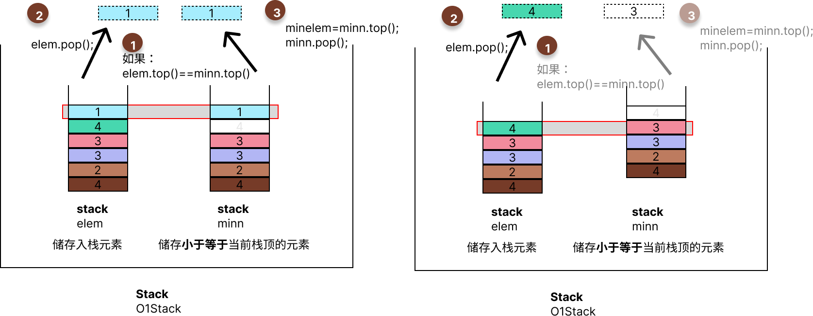

T1
问题描述请给出栈的实现策略，使得入栈、出栈与求最小值都能在O(1)内完成，请进行相应的算法分析。
请给出栈的实现策略，使得入栈、出栈与求最小值都能在O(1)内完成，请进行相应的算法分析。
思考- 栈内维护排序？
- 非O（1）❌
- 设计
|当前值|栈的最小值|为一个栈内元素？- 若有多个相同连续的最小值，则有大量空间浪费
3. 同时维护两个栈⬇️
- 非O（1）❌
|当前值|栈的最小值|为一个栈内元素？- 若有多个相同连续的最小值，则有大量空间浪费
3. 同时维护两个栈⬇️
数据结构
操作入栈
出栈并维护最小值
 查询最小值minn.top();
minn.top();代码与实现类结构
class O1Stack
{
private:
stack <int> elem;
stack <int> minn;
public:
void push(int newelem);
void pop();
int min();
};
函数代码
void O1Stack::push(int newelem)
{
this->elem.push(newelem);
if (this->minn.empty() || newelem <= this->minn.top())
{
this->minn.push(newelem);
}
return;
}
void O1Stack::pop()
{
if (!this->minn.empty() && this->elem.top() == this->minn.top())
{
this->minn.pop();
}
if (!this->elem.empty())
this->elem.pop();
return;
}
int O1Stack::querymin()
{
if(this->minn.empty())
return -1;
return this->minn.top();
}
class O1Stack { private: stack <int> elem; stack <int> minn; public: void push(int newelem); void pop(); int min(); };
void O1Stack::push(int newelem) { this->elem.push(newelem); if (this->minn.empty() || newelem <= this->minn.top()) { this->minn.push(newelem); } return; } void O1Stack::pop() { if (!this->minn.empty() && this->elem.top() == this->minn.top()) { this->minn.pop(); } if (!this->elem.empty()) this->elem.pop(); return; } int O1Stack::querymin() { if(this->minn.empty()) return -1; return this->minn.top(); }
测试测试代码
int main()
{
O1Stack S;
S.push(4);
S.push(3);
S.querymin();
S.push(3);
S.pop();
cout<<S.querymin()<<endl;
S.pop();
cout << S.querymin() << endl;
S.pop();
cout << S.querymin() << endl;
S.querymin();
S.push(1);
S.push(7);
cout << S.querymin() << endl;
return 0;
}
样例输出
3
4
-1
1
int main() { O1Stack S; S.push(4); S.push(3); S.querymin(); S.push(3); S.pop(); cout<<S.querymin()<<endl; S.pop(); cout << S.querymin() << endl; S.pop(); cout << S.querymin() << endl; S.querymin(); S.push(1); S.push(7); cout << S.querymin() << endl; return 0; }
3 4 -1 1
T2
问题描述请给出策略如最多使用一个辅助栈，实现关键字系列的排序（默认正序），并进行相应的算法分析。
请给出策略如最多使用一个辅助栈，实现关键字系列的排序（默认正序），并进行相应的算法分析。
思考没思考出来利用栈模拟递归实现某一种递归排序？
参考章小雯的神奇idea：像汉诺塔
利用栈模拟递归实现某一种递归排序？
章小雯的神奇idea：像汉诺塔
数据结构
操作sort
代码与实现类结构
class StackSort
{
public:
void mysort(int a[], int len);
private:
stack<int> data;
stack<int> sort;
int temp;
void D2S();
void S2D();
void T2S();
void D2T();
};
函数代码
void StackSort::mysort(int a[], int len)
{
for (int i = 0; i < len; i++)
this->data.push(a[i]);
while (!this->data.empty())
{
if (this->sort.empty() || this->data.top() <= this->sort.top())
{
this->D2S();
}
else
{
this->D2T();
while (!this->sort.empty() && temp > this->sort.top())
{
this->S2D();
}
this->T2S();
}
}
while (!this->sort.empty())
{
cout << this->sort.top()<<endl;
this->sort.pop();
}
}ccccb
void StackSort::D2S()
{
if (!this->data.empty())
{
this->sort.push(this->data.top());
this->data.pop();
}
return;
}
void StackSort::S2D()
{
if (!this->sort.empty())
{
this->data.push(this->sort.top());
this->sort.pop();
}
return;
}
void StackSort::D2T()
{
if (!this->data.empty())
{
this->temp = this->data.top();
this->data.pop();
}
return;
}
void StackSort::T2S()
{
this->sort.push(this->temp);
return;
}
class StackSort { public: void mysort(int a[], int len); private: stack<int> data; stack<int> sort; int temp; void D2S(); void S2D(); void T2S(); void D2T(); };
void StackSort::mysort(int a[], int len) { for (int i = 0; i < len; i++) this->data.push(a[i]); while (!this->data.empty()) { if (this->sort.empty() || this->data.top() <= this->sort.top()) { this->D2S(); } else { this->D2T(); while (!this->sort.empty() && temp > this->sort.top()) { this->S2D(); } this->T2S(); } } while (!this->sort.empty()) { cout << this->sort.top()<<endl; this->sort.pop(); } }ccccb void StackSort::D2S() { if (!this->data.empty()) { this->sort.push(this->data.top()); this->data.pop(); } return; } void StackSort::S2D() { if (!this->sort.empty()) { this->data.push(this->sort.top()); this->sort.pop(); } return; } void StackSort::D2T() { if (!this->data.empty()) { this->temp = this->data.top(); this->data.pop(); } return; } void StackSort::T2S() { this->sort.push(this->temp); return; }
测试测试代码
int main()
{
StackSort SS;
int len = 6;
int a[] = { 3,4,1,5,2,7 };
SS.mysort(a, len);
return 0;
}
样例输出
1
2
3
4
5
7
int main() { StackSort SS; int len = 6; int a[] = { 3,4,1,5,2,7 }; SS.mysort(a, len); return 0; }
1 2 3 4 5 7